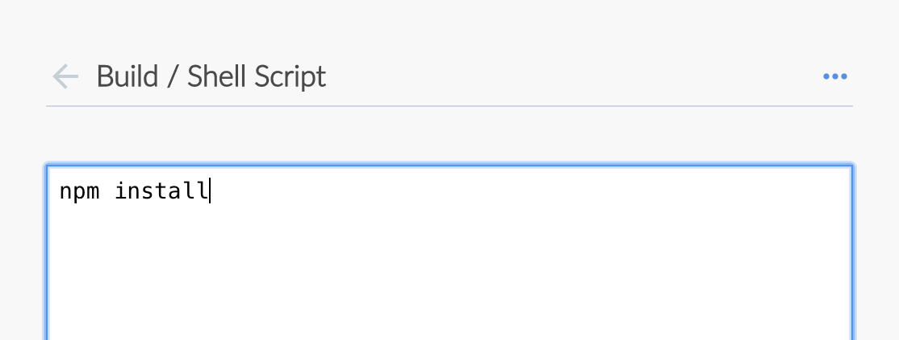
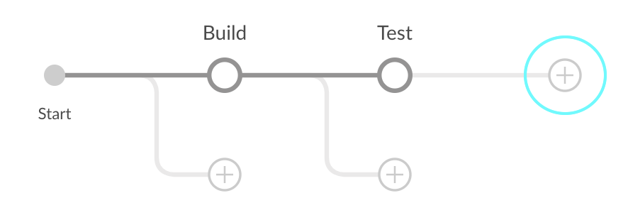

docker run \
--rm \
-u root \
-p 8080:8080 \
-v jenkins-data:/var/jenkins_home \ (1)
-v /var/run/docker.sock:/var/run/docker.sock \
-v "$HOME":/home \ (2)
jenkinsci/blueocean使用Blue Ocean生成Pipeline
Table of Contents
该教程展示如何使用Jenkins的 Blue Ocean 特性生成一个流水线，该流水线将协调构建一个简单的应用程序。
在学习本教程前, 建议您先从Tutorials overview 页面至少浏览一组入门教程来熟悉CI/CD 概念 (与你 最熟悉的技术栈有) 以及这些概念是如何在Jenkins中实现的。 Jenkins.
本教程使用与Build a Node.js and React app with npm 教程相同的应用程序 . 因此, 你这次将完全通过Blue Ocean构建相同的应用程序。 自从 Blue Ocean 提供了简化的 Git处理经验, 你将直接与 GitHub上的仓库进行交互 (相对于该存储库的本地clone)。
Duration: 本教程需花费 20-40 分钟 (假设你已经 完成下述的 配置要求 )。 确切的时间取决于你的机器的运行速度 和是否你已经在另一个教程中 run Jenkins in Docker。
你可以随时停止本教程，并且从你离开的地方继续 。
如果你已经完成 另一个教程, 你可以跳过下面的 配置要求 和 Run Jenkins in Docker部分并继续 fork示例仓库。如果你需要重启Jenkins,只需遵循停止和重启 Jenkins中的重启指示然后继续。
在 Docker中运行Jenkins
在本教程中, 将Jenkins作为 Docker 容器并从
jenkinsci/blueocean Docker
镜像中运行。
要在 Docker中运行Jenkins, 请遵循下面的macOS 和 Linux 或 Windows相关文档说明进行操作。 .
你可以在 Docker和 Installing Jenkins 页面的 Downloading and running Jenkins in Docker部分阅读更多有关Docker容器和镜像概念的信息。
在 macOS 和 Linux 系统上
-
打开终端窗口
-
使用下面的
docker run命令运行jenkinsci/blueocean镜像作为Docker中的一个容器(记住，如果本地没有镜像，这个命令会自动下载):1 将容器中的 /var/jenkins_home目录映射到 Docker volume ，并将其命名为jenkins-data。如果该卷不存在, 那么docker run命令会自动为你创建卷。2 将主机上的`$HOME` 目录 (即你的本地)映射到 (通常是 /Users/<your-username>目录) 到容器的/home目录。Note: 如果复制或粘贴上面的命令片段不起作用, 尝试复制和粘贴这个没有注释的版本:
docker run \ --rm \ -u root \ -p 8080:8080 \ -v jenkins-data:/var/jenkins_home \ -v /var/run/docker.sock:/var/run/docker.sock \ -v "$HOME":/home \ jenkinsci/blueocean -
继续 安装向导。
在 Windows 系统
-
打开命令提示窗口。
-
使用下面的
docker run命令运行jenkinsci/blueocean镜像作为Docker中的一个容器(记住，如果本地没有镜像，这个命令会自动下载):docker run ^ --rm ^ -u root ^ -p 8080:8080 ^ -v jenkins-data:/var/jenkins_home ^ -v /var/run/docker.sock:/var/run/docker.sock ^ -v "%HOMEPATH%":/home ^ jenkinsci/blueocean
对这些选项的解释, 请参考上面的 macOS 和 Linux 说明。
-
继续安装向导。
访问 Jenkins/Blue Ocean Docker 容器
如果你有一些使用 Docker 的经验，希望或需要使用
docker exec
命令通过一个终端/命令提示符来访问
Jenkins/Blue Ocean Docker 容器, 你可以添加如 --name jenkins-tutorials 选项(与上面的
docker run
), 这将会给Jenkins/Blue Ocean Docker容器一个名字
"jenkins-tutorials"。
这意味着你可以通过 docker exec 命令访问Jenkins/Blue Ocean 容器(通过一个单独的终端
/命令提示窗口) ，例如:
docker exec -it jenkins-tutorials bash
安装向导
在你访问 Jenkins之前, 你需要执行一些快速的 "一次性" 步骤。
解锁 Jenkins
当你第一次访问一个新的 Jenkins 实例时, 要求你使用自动生成的密码对其进行解锁。
-
当在终端/命令提示窗口出现两组星号时, 浏览
http://localhost:8080并等待 Unlock Jenkins 页面出现。
-
再次从终端/命令提示窗口, 复制自动生成的字母数字密码(在两组星号之间)。

-
在 Unlock Jenkins 页面, 粘贴该密码到 Administrator password 字段并点击 Continue。
使用插件自定义 Jenkins
在 解锁 Jenkins后, Customize Jenkins 页面出现。
在该页面，点击 Install suggested plugins。
安装向导显示了正在配置的Jenkins的进程，以及建议安装的插件。这个过程肯需要几分钟。
停止和重启 Jenkins
在本教程的其余部分, 你可以通过在终端/命令提示窗口输入 Ctrl-C`停止 Jenkins/Blue Ocean
Docker 容器，你可以从中运行<<run-jenkins-in-docker,上面>>的 `docker run ... 命令。
要重启Jenkins/Blue Ocean Docker 容器:
-
在上面的 macOS,Linux 或 Windows上运行相同的
docker run ...命令 。
Note: 如果有更新的话，该进程会更新jenkinsci/blueoceanDocker 镜像。 -
浏览`http://localhost:8080`。
-
等待直到登录页面出现并登陆。
Fork GitHub上的示例仓库
Fork GitHub上的示例 "Welcome to React" Node.js 和 React 应用到你自己的 GitHub 账户 。
-
确保你有 GitHub 账户。 如果没有, 在 GitHub 网站注册一个免费账号。
-
在GitHub Fork
creating-a-pipeline-in-blue-ocean到本地的 GitHub 账号。 在这个过程中如果需要帮助, 请参考GitHub网站的 Fork A Repo 文档 了解更多信息。
Note: 这是不同于使用npm构建 Node.js 和 React 应用程序 教程的另一个仓库。 尽管这些仓库包含相同的应用程序代码, 但请确保在继续之前正确的fork 和使用 。
在Blue Ocean创建你的流水线项目
-
回到Jenkins并进入Blue Ocean 界面。要做到这一点, 你应该:
-
浏览
http://localhost:8080/blue并登陆
或 -
已浏览 `http://localhost:8080/`且登录后在左侧点击 Open Blue Ocean 。
-
-
在Blue Ocean界面中心的 Welcome to Jenkins , 点击 Create a new Pipeline 来启动流水线创建向导。
Note: 如果你没有看到这个框, 点击右上方的 New Pipeline 。 -
在 Where do you store your code?, 点击 GitHub。
-
在 Connect to GitHub, 点击 Create an access key here。这将在一个新的浏览器选项卡中打开 GitHub。
Note: 如果你之前配置了 Blue Ocean，使用个人的访问令牌连接到GitHub, then Blue Ocean 将直接带你到 below的第9步。 -
在新的选项卡中, 登录到 GitHub 账户 (如果需要) 并进入 GitHub的 New Personal Access Token 页面, 为你的 GitHub 访问令牌 (e.g.
Blue Ocean)指定一个简短的 Token description 。
Note: 访问令牌通常是一个字母数字的字符串 ，它代表你的 GitHub 账户具有访问各种 GitHub 特性 和区域的特权。该访问令牌将具有预选的适当权限, 该权限为Blue Ocean 需要访问你的GitHub账号并与其交互。 -
向下滚动到页面的底部 (保留所有的 Select scopes 选项 的默认设置) 并点击 Generate token。
-
在生成的*Personal access tokens* 页面上, 复制新生成的访问令牌。
-
回到Blue Ocean, 粘贴访问令牌到 Your GitHub access token 域并点击 Connect。 +
-
在 Which organization does the repository belong to?, 点击你的 GitHub 账号 (你abovefork仓库的地方 ).
-
在 Choose a repository, 点击fork的仓库的 creating-a-pipeline-in-blue-ocean。
-
点击 Create Pipeline.
Blue Ocean 检测到在存储库的`master` 主分支的根级别上没有 Jenkinsfile 文件 然后就帮你创建一个。 (因此, 你要点击在页面的尾部另一个 Create Pipeline 来继续。)
Note: 在, 通过Blue Ocean创建的流水线项目实际上是 "多分支流水线"。 因此, Jenkins 在你的存储库的任何分支上至少找到一个Jenkinsfile文件。

创建你的初始流水线
-
在创建流水线项目之后 (above), 在流水线编辑器中, 从右边的 Pipeline Settings*面板中的*Agent*下拉框中选择 *docker。 +

-
在出现的 Image 和 Args 域中, 分别指定`node:6-alpine` 和
-p 3000:3000。
Note: 对这些值的解释, 请参考“Create your initial Pipeline…” section of the Build a Node.js and React app 教程的声明式流水线的注释 1 和 2。 -
在主流水线编辑器中, 点击 + 图标, 它会打开右侧的新阶段面板。

-
在该面板中, 在 Name your stage*域中输入
Build，然后点击下面的 *Add Step 按钮, 它会打开 Choose step type 面板。
-
在这个面板中,点击列表顶部附近的 Shell Script (选择该步骤类型), 它打开 Build / Shell Script 面板, 在这儿你可以输入该步骤的值。
Tip: 最常用的步骤类型出现在最靠近列表顶部的地方。要想在这个列表中找到其他的步骤, 你可以使用 Find steps by name 选项筛选这个列表。 -
在 Build / Shell Script 面板, 指定
npm install。
Note: 对该步骤的解释, 请参考 “Create your initial Pipeline…” section of the Build a Node.js and React app 教程的声明式流水线的注解 4 。 -
( Optional ) 点击左上的箭头图标
 回到主流水线编辑器。
回到主流水线编辑器。 -
点击右上方的 Save 按钮 开始保存你的带有"Build" 阶段的新流水线 。
-
在 Save Pipeline 对话框, 在 Description 域输入命令信息 (比如
Add initial Pipeline (Jenkinsfile))。
-
保留所有其他选项, 点击 Save & run ，Jenkins 就会继续构建你的流水线。
-
当出现Blue Ocean 的主界面时, 点击该行来查看 Jenkins 构建你的流水线项目。+ Note: 你可能需要几分钟来完成第一次的运行。 在此期间, Jenkins 进行了如下动作:
-
将你的流水线作为
Jenkinsfile提交到仓库的唯一分支 (也就是master)。 -
最初让项目在代理上排队构建。
-
下载 Node Docker 镜像并在Docker的一个容器上运行。
-
在Node容器中执行
Build阶段 (定义在Jenkinsfile)。(在此期间,npm下载了一些需要的依赖来运行你的Node.js 和 React 应用程序, 他最终被保存在 本地的Jenkins主目录的node_modules目录中).npm dependencies" width="100%">
如果Jenkins成功构建了你的应用程序，Blue Ocean 界面会变成绿色。

-
-
点击右上方的 X 回到 Blue Ocean 的主界面。

Note: 再继续之前, 你可以检查到Jenkins已为你在你fork的GitHub仓库创建了Jenkinsfile(在仓库的唯一的master分支)。
给你的流水线添加测试阶段
-
在Blue Ocean 界面, 点击右上方的 Branches 访问你的仓库的分支页面, 在这儿你可以访问
master分支。+
-
点击
master分支的 "Edit Pipeline" 图标 打开该分支的流水线编辑器。
打开该分支的流水线编辑器。 -
在主流水线编辑器中, 点击在above创建的*Build*阶段的右侧的 + 图标，打开右侧的新阶段面板。

-
在这个面板中, 在 Name your stage*域输入
Test，点击下面的 *Add Step 按钮来打开 Choose step type 面板。 -
在这个面板中, 点击列表顶部附近的 Shell Script。
-
在生成的 Test / Shell Script 面板, 指定
./jenkins/scripts/test.sh，然后点击左上方的箭头图标 返回到流水线阶段编辑器。 -
在面板的右下方, 点击 Settings 以显示面板的这一部分。
-
点击*Environment* 标题右边的 + 图标 (你将配置一个环境变量)。
-
在出现的 Name 和 Value 域中, 分别指定
CIandtrue。+
Note: 对该指令以及它的步骤的解释, 请参考“Add a test stage…” section of the Build a Node.js and React app 教程的生命是流水线的注解 1 和 3。 -
( Optional ) 点击左上方的箭头图标
回到主流水线编辑器 。 -
点击右上方的 Save 按钮开始保存你的带有新得"Test"阶段的流水线。
-
在 Save Pipeline 对话框的*Description*域, 输入提交信息(比如
Add 'Test' stage)。 -
保留所有其它选项, 点击 Save & run ， Jenkins 就会构建你改进后的流水线。
-
当Blue Ocean的主界面出现时, 点击 top 行来查看Jenkins 构建你的流水线项目。
Note: 你会注意到在这次运行中Jenkins 不再需要下载 Node Docker 镜像。 Jenkins 只是需要从之前下载过的Node镜像中运行一个新的容器。因此， 在接下来的时间运行你的流水线会更快些。
如果你改进后的流水巷运行成功, Blue Ocean界面应如下图所示。注意另外的"Test" 阶段。你可以点击之前的 "Build" 阶段来循环的访问这些阶段的输出。
-
点击右上方的 X 回到 Blue Ocean 的主界面。
给你的流水线添加最终交付阶段
-
在 Blue Ocean 的主界面, 点击右上方的 Branches 以访问你仓库的
master分支。 -
点击
master分支的 "编辑流水线" 图标
为该分支打开流水线编辑器。 -
在主流水线编辑器中, 点击在above创建的*Test*阶段右侧的 + 图标来打开新阶段面板。
Deliver stage" width="60%"> -
在这个面板中的 Name your stage 域, 输入
Deliver并点击下面的 Add Step 按钮打开 Choose step type 面板。 -
在该面板中, 点击列表顶部附近的 Shell Script 。
-
在生成的 Deliver / Shell Script 面板, 指定
./jenkins/scripts/deliver.sh，然后点击左上的箭头图标 回到流水线阶段编辑器。
Note: 对该步骤的解释, 请参考`deliver.sh`文件，它位于你在GitHub fork的仓库的jenkins/scripts中。 -
再次点击 Add Step 按钮。
-
在 Choose step type 面板的 Find steps by name 域输入
input。 -
点击过滤后的 Wait for interactive input 步骤类型。
-
在生成的 Deliver / Wait for interactive input 面板,在 Message 域指定
Finished using the web site? (Click "Proceed" to continue)，然后点击左上方的箭头图标 回到流水线阶段编辑器。
Note: 对该步骤的解释, 请参考“Add a final deliver stage…” section of the Build a Node.js and React app 教程的声明式流水线的注释 4。 -
点击 Add Step 按钮 (最后一次)。
-
点击列表顶部附近的 Shell Script。
-
在生成的 Deliver / Shell Script 面板, 指定
./jenkins/scripts/kill.sh.
Note: 对该步骤的解释,请参考kill.sh文件，它 位于你在GitHub上fork的仓库的jenkins/scripts中。 -
( Optional ) 点击左上方的图标按钮
回到主流水线编辑器。 -
点击右上方的 Save 按钮开始保存你的带有新"Deliver" 阶段的流水线。
-
在 Save Pipeline 对话框的 Description 域填写提交信息 (比如
Add 'Deliver' stage)。 -
保留所有其它选项, 点击 Save & run ，Jenkins 就会对你改进后的流水线进行构建。
-
当Blue Ocean主界面出现时, 点击 _top_行来查看Jenkins 构建你的流水线项目。+ 如果你改进后的流水巷线运行成功, Blue Ocean 界面应如下图所示。注意另外的 "Deliver" 阶段。 点击之前的"Test" 和 "Build" 阶段循环的访问这些阶段的输出。

-
确保你正在查看 "Deliver" 阶段 (如果必要的话点击它), 探后点击绿色的
./jenkins/scripts/deliver.sh步骤来扩展它的内容并向下滚动直到你看到http://localhost:3000链接。
-
点击
http://localhost:3000链接查看你的 Node.js 和 React 应用程序在一个新的web浏览器选项卡中运行 (在开发模式下)。 你将会看到一个标题为*Welcome to React*的网页/站点。 -
当你查看完该网页/站点时, 点击 Proceed 按钮以完成流水线的执行。

-
点击右上方的 X 回到Blue Ocean 的主界面， 它以时间顺序的反序的方式列出了你的流水线运行的历史记录。

跟踪 (可选)
如果你检查在你fork的`creating-a-pipeline-in-blue-ocean` 仓库的根目录下的Blue Ocean生成的 Jenkinsfile 的内容 , 注意
environment
指令的位置。 该指令在"Test" 阶段的位置意味着环境变量
CI (它的值为`true`) 只是在"Test"阶段的范围内可用的变量。
你可以在Blue Ocean中设置该指令以便于它的环境变量在整个流水线中都是可用的(和 使用npm构建Node.js 和 React 应用程序 教程中一样)。要做到这一点:
-
从Blue Ocean的主界面, 点击右上方的 *Branches*来访问仓库的
master分支。 -
点击
master分支的"编辑流水线" 图标为该分支打开流水线编辑器。 -
在主流水线编辑器中, 点击 你在 above创建的*Test* 阶段 开始编辑它。
-
在右侧的阶段面板中, 点击 Settings 来显示面板的这一部分。
-
点击 `CI`环境变量(你之前创建的)右边的减 (-) 图标来删除它。
-
点击左上的箭头图标
返回主流水线编辑器。 -
在 Pipeline Settings 面板,点击*Environment*标题右边的 + 图标 (你将为此配置一个 global 环境指令)。
-
在出现的 Name 和 Value 域中, 分别指定
CI和true。 -
点击右上的*Save* 按钮开始保存你的迁移了环境指令的流水线。
-
在*Save Pipeline* 对话框的*Description*域指定提交消息(比如
Make environment directive global)。 -
保留所有的其他设置, 点击 Save & run ，Jenkins 继续去构建你的改进后的流水线。
-
当出现Blue Ocean 的主界面时, 点击 top 行来查看Jenkins 构建你的流水线项目。
你应该看到与当你添加最终交付阶段(above)完成后相同的构建工程。 然而, 当你再次检查Jenkinsfile, 你会注意到environment指令是agent部分的兄弟。
结束语
做得好！您刚刚使用Jenkins的Blue Ocean特性以及npm构建了一个简单的Node.js 和React应用程序！
您在上面创建的 "Build", "Test" 和 "Deliver" 阶段是在Jenkins中使用技术栈构建其他应用程序的基础，包括更复杂的应用程序以及将多个技术栈组合在一起的应用程序。
由于Jenkins具有极高的可扩展性，因此可以对其进行修改和配置，以处理构建协调和自动化的几乎任何方面。
要详细了解Jenkins可以做什么，请查看：
-
教程概览 页面中的其他介绍教程。
-
用户手册 使用Jenkins的更多细节，例如 Pipelines (尤其是 Pipeline 语法) 和 Blue Ocean 界面。
-
Jenkins blog 资讯，其他教程和更新。